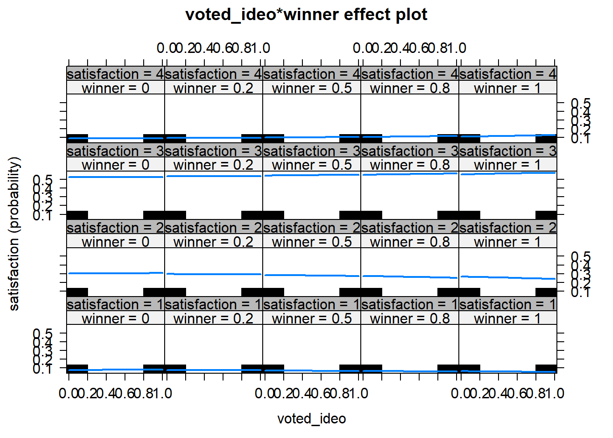
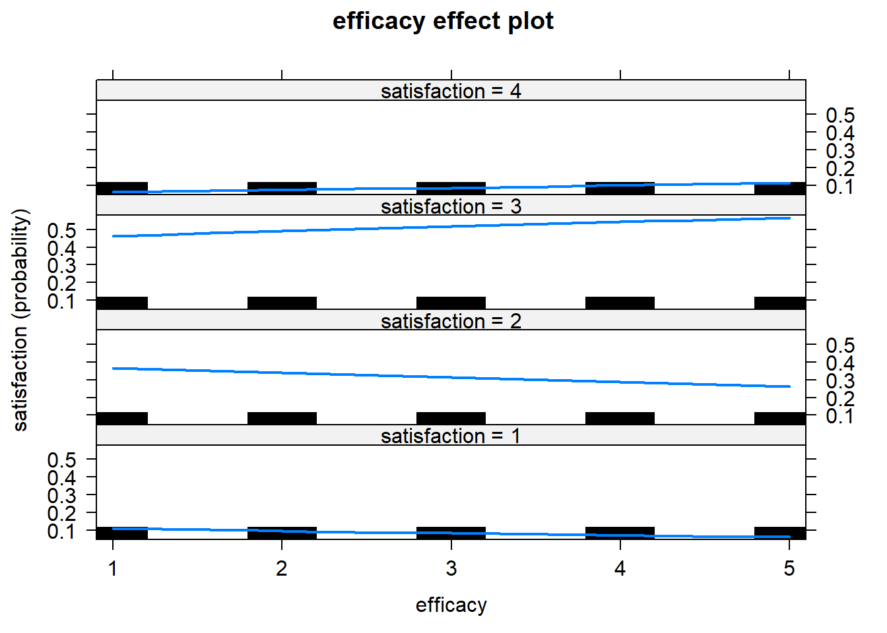
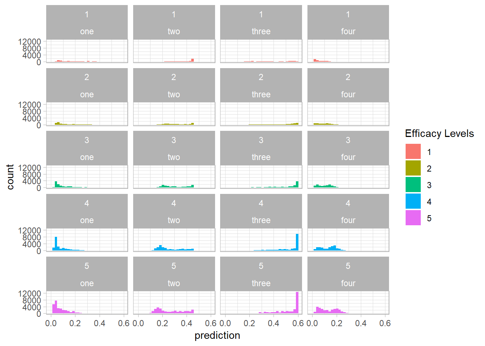

Chapter 5 Ordered Logit Models
5.1 Data and Packages
library(tidyverse)
library(modelr)
library(haven)## Warning: package 'haven' was built under R version 3.5.2library(broom)
satisfaction <- read_dta("http://j.mp/SINGHejpr")In this dataset we want to model each respondent’s level of satisfaction with democracy. This variable can be a 1, 2, 3, 4. We can say they are ordered, but we don’t know the distance. 4 is Very satisfied. Because they are ordered, we should run an ordered logit/probit.
5.2 Running the Model
We will likely want to use the polr (proportional odds logistic regression) command from the MASS package.
library(MASS)##
## Attaching package: 'MASS'## The following object is masked from 'package:dplyr':
##
## selectlibrary(effects)## Warning: package 'effects' was built under R version 3.5.2## lattice theme set by effectsTheme()
## See ?effectsTheme for details.satisfaction$satisfaction <- ordered(as.factor(satisfaction$satisfaction))
ideology_satis <- polr(satisfaction ~ voted_ideo*winner + abstained +
educ + efficacy + majoritarian_prez + freedom + gdppercapPPP +
gdpgrowth + CPI + prez,
method = "logistic", data = satisfaction)
summary(ideology_satis)##
## Re-fitting to get Hessian## Call:
## polr(formula = satisfaction ~ voted_ideo * winner + abstained +
## educ + efficacy + majoritarian_prez + freedom + gdppercapPPP +
## gdpgrowth + CPI + prez, data = satisfaction, method = "logistic")
##
## Coefficients:
## Value Std. Error t value
## voted_ideo -0.02170 0.023596 -0.9198
## winner 0.21813 0.020638 10.5694
## abstained -0.25425 0.020868 -12.1838
## educ 0.08238 0.020180 4.0824
## efficacy 0.16246 0.006211 26.1569
## majoritarian_prez 0.05705 0.018049 3.1609
## freedom 0.04770 0.014087 3.3863
## gdppercapPPP 0.01975 0.001385 14.2578
## gdpgrowth 0.06653 0.003188 20.8673
## CPI -0.23153 0.005810 -39.8537
## prez -0.11503 0.026185 -4.3930
## voted_ideo:winner 0.19004 0.037294 5.0957
##
## Intercepts:
## Value Std. Error t value
## 1|2 -2.0501 0.0584 -35.1284
## 2|3 -0.0588 0.0575 -1.0228
## 3|4 2.7315 0.0586 46.6423
##
## Residual Deviance: 146397.33
## AIC: 146427.33Note that the polr command requires that our outcome variable is ordered numerically. Also notice the interaction term. While the output shows t-values, they are actually z values since maximum likelihood methods typically call for z ratios. Lastly, note the different intercept cutpoints. These are generally not of interest to us, but are useful when it comes to making predictions.
If we wanted to get the p-value of a specific variable (voted_ideo:winner for instance) then we could run the following code with the z ratio.
1 - pnorm(5.0957)## [1] 1.737275e-07We can conclude with 99.9% confidence that the coefficient on the interaction term is greater than zero.
A nice teature of using the logit link function is that the results can be inerpreted in terms of odd ratios, though they have to be computed differently for ordinal models compared to logit models. FOr logit models, we must exponentiate the negative value of a coefficient and interpret the odds of being in lower groups relative to higher groups. For example: the odds ratio for our coefficients from the model above can be produced by the following code:
100*(exp(-ideology_satis$coefficients)-1)## voted_ideo winner abstained educ
## 2.194186 -19.597657 28.949139 -7.908003
## efficacy majoritarian_prez freedom gdppercapPPP
## -14.994659 -5.545347 -4.658313 -1.955471
## gdpgrowth CPI prez voted_ideo:winner
## -6.436961 26.053177 12.190773 -17.307376If, for instance, we wanted to interpret the influence of efficiency, then we could say that for a one point incrase on a five point efficacy scale, the odds a respondent will report that they are “not at all satisfied” with democracy relative to any of the three categories decrease by 15%, all else equal. Also, the odds that a respondent will report “not at all satisfied” or “not very satisfied” relative to the two higher categories also decrease by 15%, all else equal. In general then, we can interpret the oddds ratio for an ordered logit as shaping the odds of all optiosn below a threshold relative to all options above a threshold.
5.3 Gettin predictions:
Here I am doing the discrete class predicted, not the predicted probabilities. If you want to see predicted probabilities, see the section of Graphing the Tidy Way.
Somewhat uninteresting is that all of them are expected to be in the 3rd category.
new_data <- satisfaction %>%
data_grid(efficacy, .model = ideology_satis)
new_data <- new_data %>%
mutate(pred_class = predict(ideology_satis, new_data, type = "class"))
new_data## # A tibble: 5 x 12
## efficacy voted_ideo winner abstained educ majoritarian_pr~ freedom
## <dbl> <dbl> <dbl> <dbl> <dbl> <dbl> <dbl>
## 1 1 0 0 0 0 0 -1
## 2 2 0 0 0 0 0 -1
## 3 3 0 0 0 0 0 -1
## 4 4 0 0 0 0 0 -1
## 5 5 0 0 0 0 0 -1
## # ... with 5 more variables: gdppercapPPP <dbl>, gdpgrowth <dbl>,
## # CPI <dbl>, prez <dbl>, pred_class <fct>5.4 Showing predictions
Effect(focal.predictors = c("voted_ideo", "winner"), ideology_satis)##
## Re-fitting to get Hessian##
## voted_ideo*winner effect (probability) for 1
## winner
## voted_ideo 0 0.2 0.5 0.8 1
## 0 0.07738718 0.07432926 0.06995037 0.06581111 0.06317929
## 0.2 0.07769769 0.07410523 0.06900243 0.06422663 0.06121568
## 0.5 0.07816558 0.07377033 0.06760280 0.06191642 0.05837700
## 0.8 0.07863605 0.07343684 0.06622953 0.05968401 0.05566216
## 1 0.07895114 0.07321528 0.06532847 0.05823785 0.05391873
##
## voted_ideo*winner effect (probability) for 2
## winner
## voted_ideo 0 0.2 0.5 0.8 1
## 0 0.3031896 0.2960183 0.2852714 0.2745687 0.2674749
## 0.2 0.3039029 0.2954823 0.2828681 0.2703255 0.2620302
## 0.5 0.3049728 0.2946783 0.2792682 0.2639884 0.2539215
## 0.8 0.3060424 0.2938744 0.2756754 0.2576905 0.2458946
## 1 0.3067553 0.2933386 0.2732849 0.2535167 0.2405948
##
## voted_ideo*winner effect (probability) for 3
## winner
## voted_ideo 0 0.2 0.5 0.8 1
## 0 0.5285674 0.5351282 0.5445027 0.5532844 0.5587926
## 0.2 0.5279015 0.5356088 0.5465232 0.5566096 0.5628467
## 0.5 0.5268982 0.5363271 0.5494974 0.5614062 0.5685967
## 0.8 0.5258898 0.5370422 0.5524023 0.5659676 0.5739373
## 1 0.5252147 0.5375173 0.5542999 0.5688746 0.5772640
##
## voted_ideo*winner effect (probability) for 4
## winner
## voted_ideo 0 0.2 0.5 0.8 1
## 0 0.09085585 0.09452425 0.1002756 0.1063358 0.1105532
## 0.2 0.09049792 0.09480369 0.1016063 0.1088383 0.1139074
## 0.5 0.08996341 0.09522425 0.1036317 0.1126889 0.1191048
## 0.8 0.08943174 0.09564648 0.1056927 0.1166580 0.1245060
## 1 0.08907887 0.09592889 0.1070867 0.1193709 0.1282225plot(Effect(focal.predictors = c("voted_ideo", "winner"), ideology_satis))##
## Re-fitting to get Hessian
plot(Effect(focal.predictors = "efficacy", ideology_satis))##
## Re-fitting to get Hessian
5.5 Graphing in a Tidy Way
I am not sure if I have greally graphed this correctly, but this is what I could come up with.
pred <- predict(ideology_satis, type = "probs")
prediction <- cbind(satisfaction, pred)
prediction %>%
rename("one" = 22,
"two" = 23,
"three" = 24,
"four" = 25) %>%
dplyr::select(efficacy, one, two, three, four) %>%
gather(outcome, prediction, -efficacy) %>%
mutate(outcome = factor(outcome, levels = c("one", "two", "three", "four"))) %>%
ggplot(aes(x = prediction, fill = as.factor(efficacy))) +
geom_histogram() +
facet_wrap(efficacy~outcome, ncol = 4) +
labs(fill = "Efficacy Levels")## `stat_bin()` using `bins = 30`. Pick better value with `binwidth`.